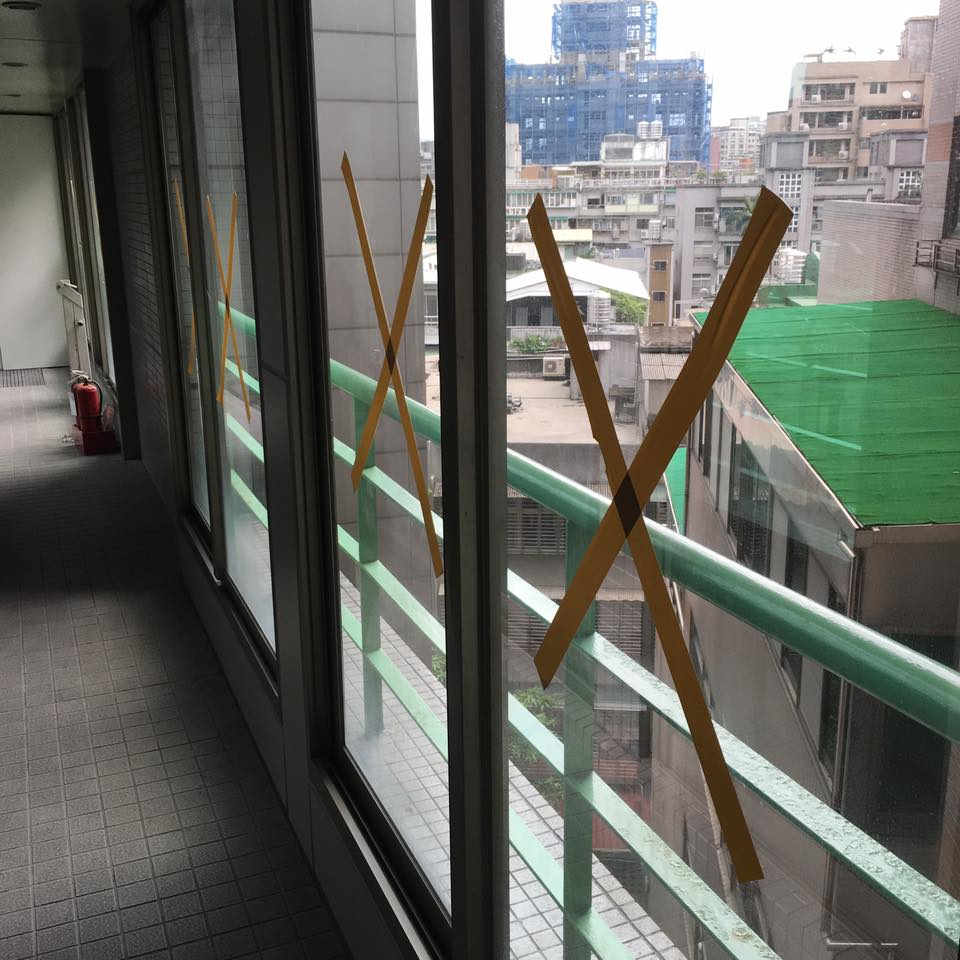
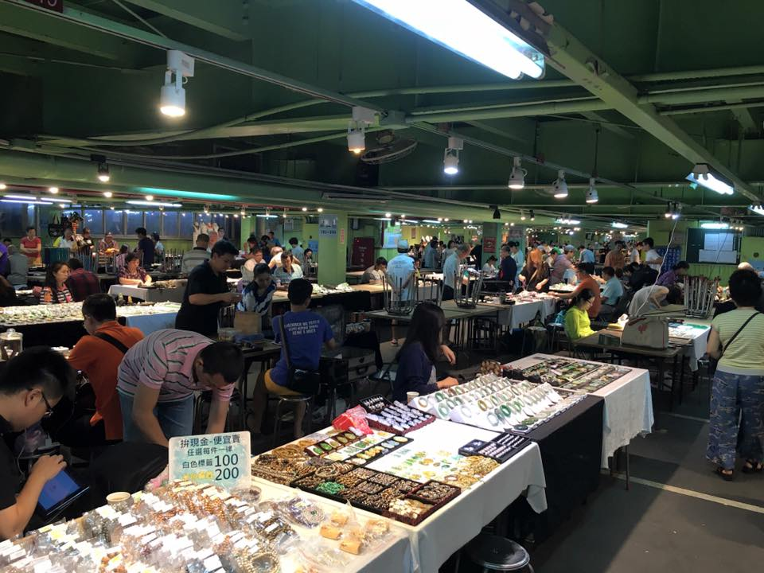
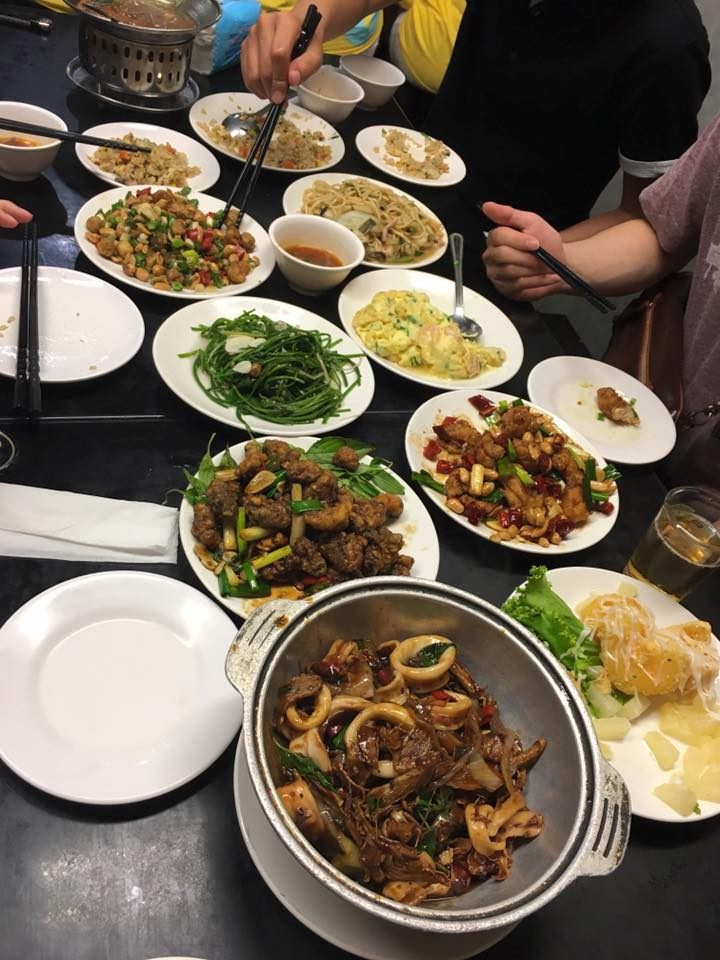

Lately I'd been very busy with schoolwork, as well as feeling under the weather and exhausted for a bit, and also preparing for my Hong Kong trip, so I didn't do anything super exciting these weeks and I'm combining them.
Typhoon Nepartak!
Typhoon Nepartak was the first typhoon I've experienced (should've taken some pictures for the "baby's first typhoon" slot in the baby book) and the typhoon was pretty hyped up. It was a category 5 super typhoon (still not sure exactly what that means). On Thursday many places had taped their windows and the super market was quickly selling out of water. I bought some emergency water and snacks in case I couldn't leave the apartment on Friday or in case we had no water/electricity. Friday was going to officially be a typhoon holiday where nobody came into work or went to school. On Thursday night the rain was so loud outside my window, but when I woke up on Friday it just seemed like a regular rain. It turns out the typhoon hit more of the southern part of Taiwan, so Taipei was mostly unaffected besides having a lot of windy rain. In the afternoon my roommate and I went to the movies, because we heard that's what Taiwanese people do when there's a typhoon holiday! We had problems with our umbrellas in the wind and rain but other than that, it just seemed like a normal day. Probably a good thing my first typhoon experience was very anticlimactic! (The header image for this post is actually just from a normal non-typhoon rain that happened last week but it seems fitting.)
Taipei Fine Arts Museum
I'm not much of an art museum goer but I had some free time so I went one afternoon. Because I was a student, the admission was extremely cheap, about 50 cents USD! The exhibits were from Taiwanese artists and there was so much to see.
National Palace Museum
Even on a Wednesday afternoon the National Palace Museum was packed with tourists, but still very worth going to! There are three floors full of Chinese historical items, ranging from recent decades to thousands of years old. I wanted to see the famous jade cabbage sculpture, but it was in the Southern branch of the museum until September.
Jade, Flower, Artist Markets
The Jade, Flower, and Artist markets are very close to each other underneath an overpass and are open on the weekend mornings. The Jade market had so many beautiful items, but I had no idea what the actual value of some of these items should be (the prices are unmarked and you should haggle a bit), so I looked around and decided I'd come back another weekend.
The flower market was great, but I didn't want to look too hard, because unfortunately I can't take any live plants back to America. There were so many cheap and beautiful plants, bonsais too! I already have 10 houseplants in America that my grandma is taking care of for me for the summer...
The artist market was pretty small, but still cool to see while I was there. There were also additional jade stands, but I was a bit suspicious that some of the jade was fake there.
Wufenpu
Wufenpu is the place to go if you love window shopping and cheap items. It's a ton of streets/blocks of whole sale clothes, bags, shoes, and other items. It's similar to Ximending Shopping District, but less lively, cheaper, and with fewer food options. It's like shopping on Aliexpress (my guilty pleasure), but in real life. I bought some pretty headbands and a cheap purse I really liked that ended up breaking two weeks later in Hong Kong but I probably got my money's worth out of it.
Rechao
Taiwanese beer houses are so much fun! It's got good food, beer (sometimes poured by girls in short skirts), and a loud environment! It's best to go with a ton of people so you can order and share many dishes of food.
A link to my full album of Taiwan photos can be found here. Keep checking back for weekly updates!
Questions? Comments? Don't hesitate to contact me!